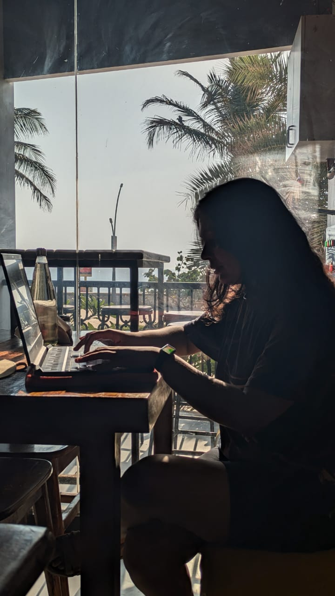

Hi, I’m Saathvika.
I care about design that’s both meticulous and human.
Bellavita
GNC
SleepyCat
Thrive
+7 others
Questions I loved asking
Places that let me solve things
Bellavita
GNC
SleepyCat
Thrive
+7 others
Guardian
2023 – now
Bloom
2023
Mesa
2022
Tenfold
2022
Northwind
2021 – 2022
yours?
Notes from nice people
Asks the question everyone else skipped — then goes and answers it. She spent a week talking to support staff nobody had thought to ask, came back with three findings, and quietly reshaped the roadmap around them. Half of what shipped that quarter started in her notes.
Turned a six-month argument into one screen we all agreed on. Engineering had one version, sales had another, and she sat through both without picking a side until she understood why each existed. What she brought back made the disagreement look like a misunderstanding.
She’ll redraw it four times, and the fourth one always looks obvious — which is the whole trick. Working with her taught me that “obvious” is something you arrive at, not something you start with. She never once defended a draft she’d outgrown.
Somehow makes research readable. Half the team still cites her deck from last spring, including people who joined afterwards and have never met her. It became the thing new hires get sent in their first week, which is not what usually happens to research decks.
Slice of life
third coffee, first good idea
this is what “one small tweak” looks like

The formal version
My résumé →
Say Hello!
Tohello@saathvika.me
ReSomething you’re building
Say hello…